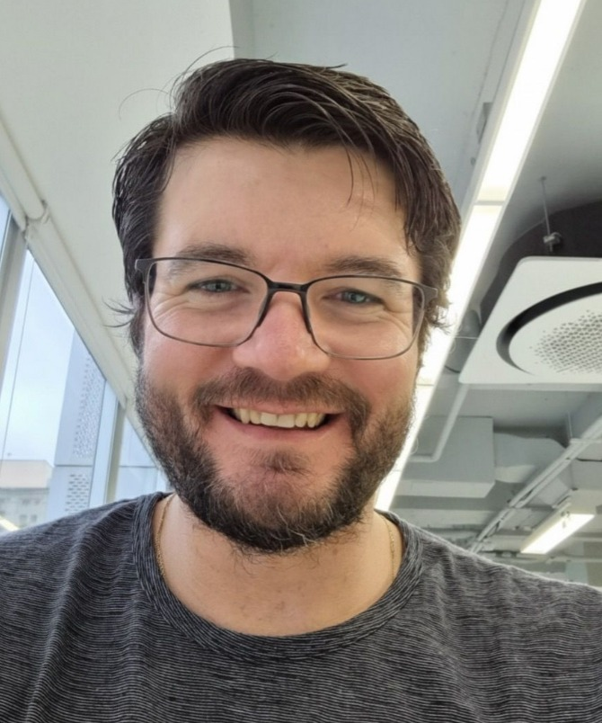

Fabio F Bergami | WDD 130

I'm a learner and a proud father of four daughters and beautiful wife, with a passion for technology, family, and how things work. I enjoy developing in .NET and C#, playing tennis, watching movies, and sharing delicious meals with the people I love. Whether I'm learning a new programming skill, solving a complex problem, or spending quality time with my family, I enjoy the process of continuous growth and the satisfaction of seeing my efforts come together.
I'm currently advancing my skills at BYU as a Full Stack Web Developer, where I focus on approaching complex challenges from new challenges and turning ideas into tangible, scalable applications. I enjoy finding architectural patterns, understanding how backend and frontend systems fit together, and discovering creative solutions to problems. I believe there is always something new to learn, and I'm committed to becoming a great professional to achieve my goal of working for a tech company in the US or Europe.